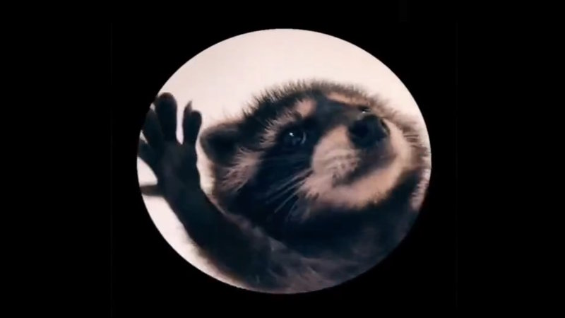
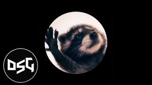

Pedro Raccoon | 2024
Press the picture!
What is Pedro Raccoon?
This meme is a video featuring a baby raccoon vibing and spinning inside a circle on a black background. The original video of the raccon was uploaded by the TikTok user @fleksa30. There are many creators edited their song of choice to the video, but the most viral edition of it which is the pedro raccoon is uploaded by TikTok user @malykha2114.

